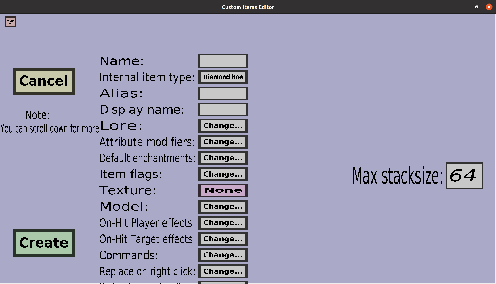

The simple item edit menu can be used to edit or create 'simple' custom items. It should look like this:
This menu contains everything the base item edit menu has, but with an additional 'Max stacksize' option. For a description of all other properties, check the link to the base item edit menu.
In the text edit field on the right of 'Max stacksize', you can choose the maximum stacksize of the custom item in SURVIVAL (and adventure) mode. It will not work in creative mode due to minecrafts interesting creative inventory handling. The maximum stacksize must be an integer that is at least 1 and at most 64.